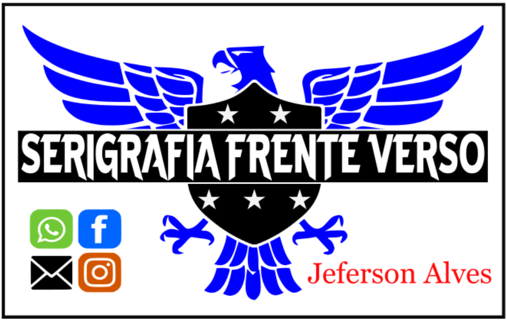

Serigrafia/Silk screen:

Técnica utilizada para imprimir artes gráficas em diversos materiais como; tecidos, papéis, plasticos e outros materiais.
Com um campo muito amplo e muito complexo em oportunidades, por aqui exploro essa técnica baseado nas experiências que tenho.
Habilidades exploradas neste ambiente:
- Impressões em tecidos
- Impressões em papéis
- Impressões em plasticos
- Impressões em outros materiais
Requisitos para o processo de impressão serigráfica:
- Coleta de informações do projeto para testes pelo serígrafo.
- Realizar testes com as matérias-primas coletadas através das informações do projeto.
- Apresentar os testes realizados pelo serígrafo para o solicitante.
Após aprovado por ambos, dar início ao projeto.